Next: Conditionals
Up: Gnucap The Gnu Circuit
Previous: Y: Admittance
Contents
Gnucap behavioral modeling is in a state of transition, so this is
subject to change in a future release.
Basically, all simple components can have a behavioral description,
with syntax designed as an extension of the Spice time dependent
sources. They are not necessarily physically realizeable. Some only
work on particular types of analysis, or over a small range of
values. Some can be used together, some cannot.
In general, all simple components are considered to have simple
transformations. A function returns one parameter as a function of
one other, as an extension of their linear behavior.
Linear behavior:
- Capacitor
- 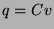
- Inductor

- Resistor
- 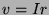
- Admittance
- 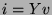
- VCVS
- 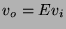
- VCCS
- 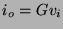
- CCVS
- 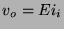
- CCCS
- 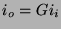
Sources are defined as functions of time:
- Voltage source
- 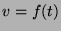
- Current source
- 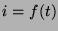
For behavioral modeling / nonlinear values, replace the constant times
input by an arbitrary function:
- Capacitor

- Inductor
- 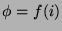
- Resistor
- 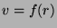
- Admittance
- 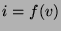
- VCVS
- 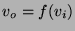
- VCCS
- 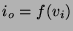
- CCVS
- 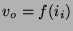
- CCCS
- 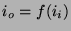
- AC
- AC analysis only.
- DC
- DC (steady state) value.
- OP
- OP analysis.
- TRAN
- Transient analysis.
- FOUR
- Fourier analysis only.
- ELSE
- Anything not listed.
- ALL
- All modes.
- COMPLEX
- Complex (re, im) value.
- EXP
- Spice Exp source. (time dependent value).
- FIT
- Fit a curve with splines.
- GENERATOR
- Value from Generator command.
- POLY
- Polynomial (Spice style).
- POSY
- Posynomial (Like poly, non-integer powers).
- PULSE
- Spice Pulse source. (time dependent value).
- PWL
- Piece-wise linear.
- SFFM
- Spice Frequency Modulation (time dependent value).
- SIN
- Spice Sin source. (time dependent value).
- TANH
- Hyperbolic tangent xfer function.
- TABLE
- Fit a curve with splines.
- Cap
- Spice semiconductor ``capacitor'' model.
- Res
- Spice semiconductor ``resistor'' model.
Subsections
Next: Conditionals
Up: Gnucap The Gnu Circuit
Previous: Y: Admittance
Contents
Al Davis
2002-09-29